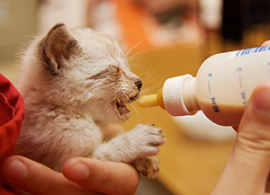
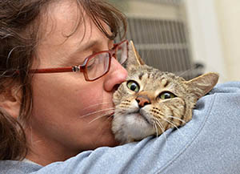

programs
Many San Francisco Animal Care & Control programs and
services for the public and their pets are funded by
Friends of SFACC.
These critical programs are outside the scope
the current City budget.
to your generous support,
shelter enhancements

Volunteer
Volunteer with Friends of SFACC If you’re interested in
volunteering with Friends of SFACC,
we can use the following skills and would
be glad to hear from you. Email info@friendsofsfacc.org.
Event planning and production Marketing and
publicity Grant research
Ways to give
Make a Difference Friends of SFACC is a registered 501
(c)(3) nonprofit and is an all-volunteer-run
organization. Our federal EIN (employer identification number
for tax-exempt verification) is 94-3371620.
Your gift makes it possible to provide programs,
supplies, and awareness of